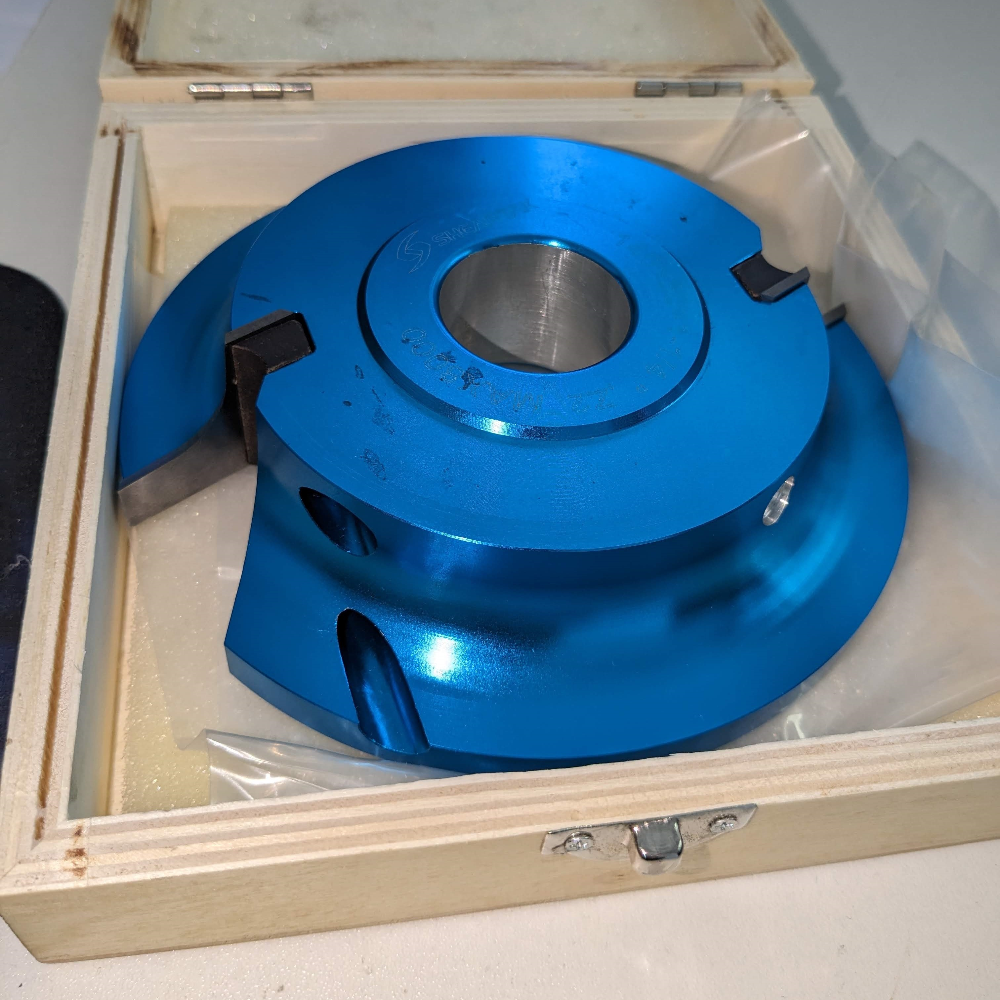
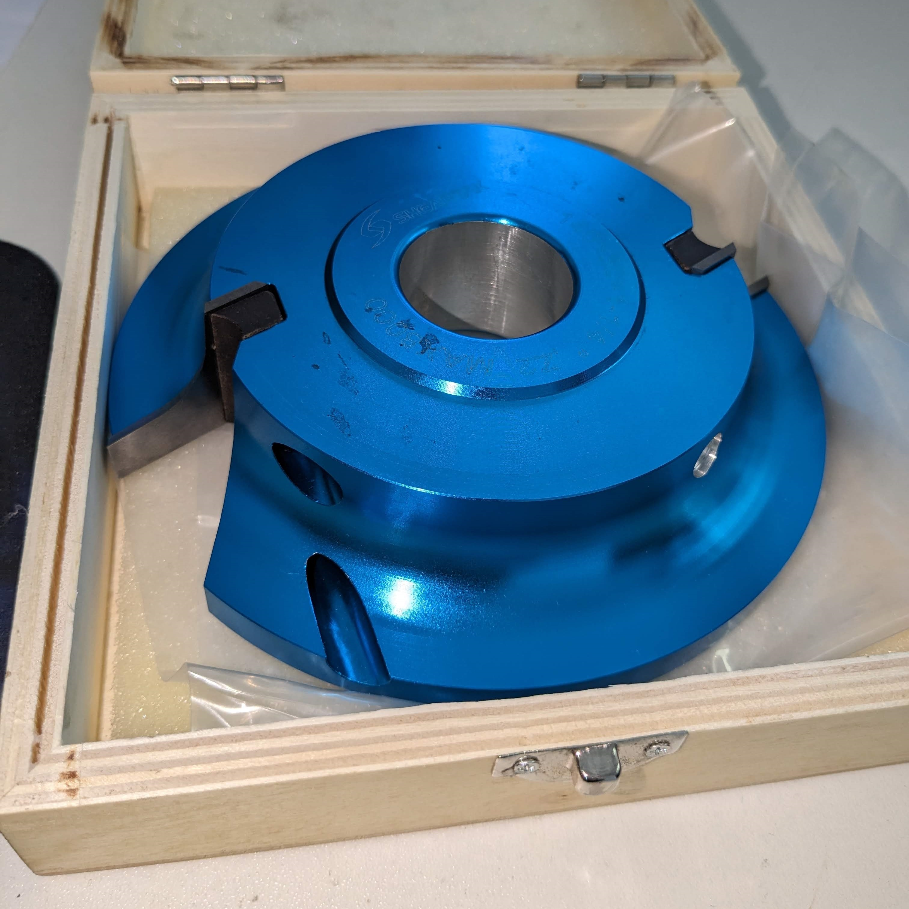
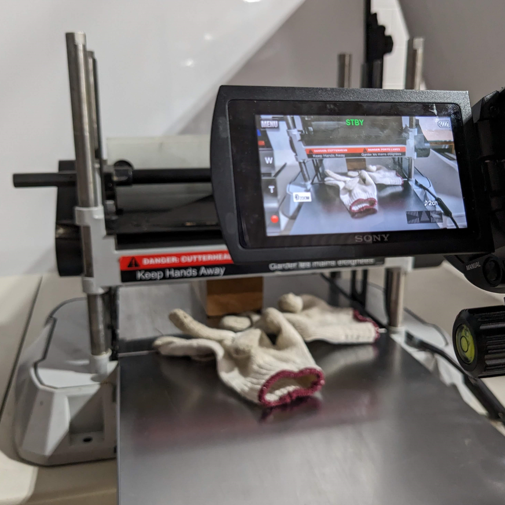
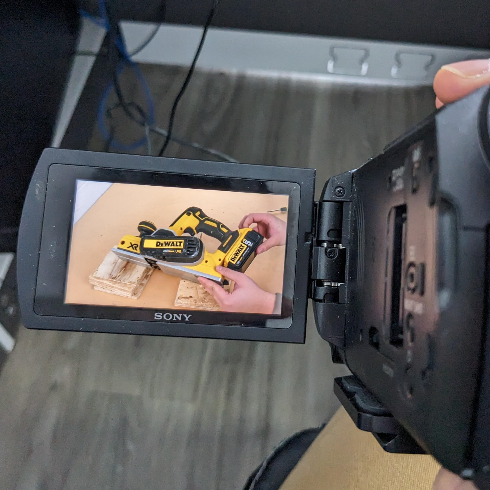

Overview
I worked on...
Using SolidWorks to model custom spiral cutterhead upgrades for clients' planers and jointers.
Creating custom user manuals based on parts lists for each model.
Making YouTube videos for tutorials and troubleshooting guides for various machines using Premiere and Photoshop.
Automating the process of creating mockup images for products using Photoshop actions.
An internal Python tool to help with stocking and keeping inventory in the warehouse.
Mechanical Engineering
I worked on 15 customized woodworking cutterheads. Some are for wood planers, some for jointers, and various spinning things with blades.
Unfortunately, I can't actually attach any of those models, but I have some screenshots of final SolidWorks models of my parts.
I would measure or use existing measurements of clients' machines and model the cutterhead upgrade for them.
I worked to provide accurate models for the manufacturing team to follow and to prototype.
 

YouTube Videos
I have just a couple of YouTube videos I have filmed, edited, and voiced over.
I am really proud of these videos as they should hopefully guide anyone looking to upgrade their machines with Sheartak.
 Photoshop Actions
I also tried optimizing the mockup image process.
I really liked the Photoshop actions feature that allows set actions to be recorded than replayed.
So, I created a set of actions to remove the background from any image while maintaining a drop shadow on the object.
This saved hours of time editing images, and hopefully enough of a start to automate further with Python.